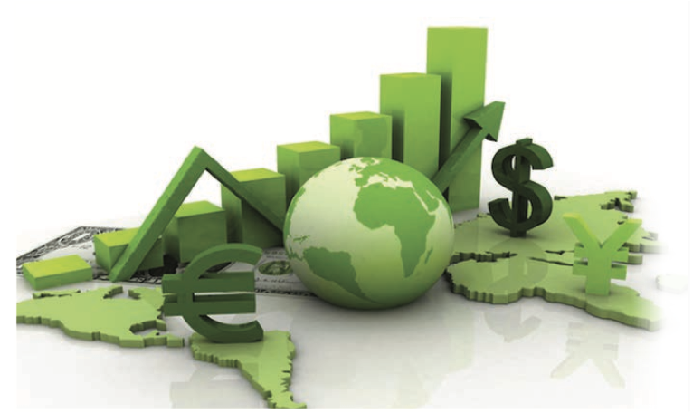
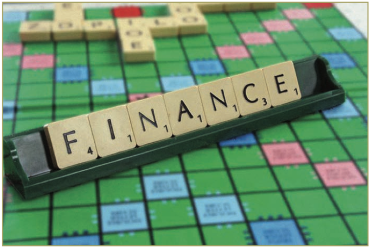
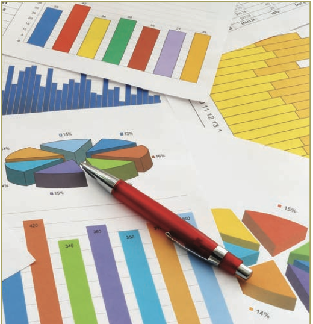
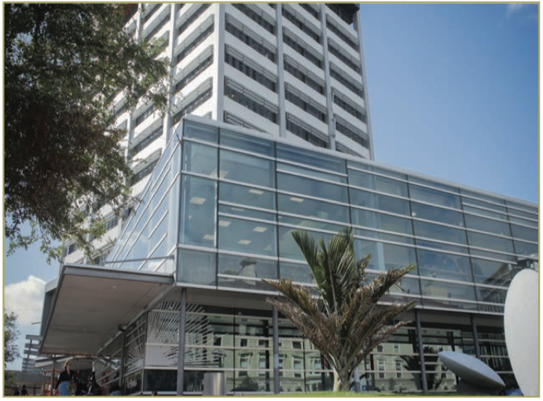

Intro
Employers
Graduate portfolios
Economics and finance at Victoria
Economics and finance
We all make choices in our daily lives, in a world where there are always constraints that influence how we decide. It could be the choice between purchasing the consumer products we need or
want, or saving and investing with retirement in mind. Economics and Finance provide models
that describe how we spend money as individuals, as businesses, and as governments. A working knowledge of economics and finance equips people with the knowledge and thinking tools to make decisions about money matters in their personal and professional lives. This knowledge helps people understand the workings of the economies to which they contribute, and many others. It explains how people allocate resources and why we allocate them as we do. Economists use an intellectual toolkit to analyse complex problems, combining the power of abstract reasoning, logic and mathematical techniques with accurate observation. They construct conceptual models and 'ask' them what the outcome might be if certain conditions were in place. By changing the conditions in the model, different outcomes can be predicted.

Economics explains the shifting variables of a dynamic world in which people's energy and effort circulate in complex forms and patterns that are expressed and measured in terms of numbers and money. But the number crunching and mathematical modeling may also address topics with a human component. Measures of gross national happiness and wellbeing can enter into the mix, and when economists with a sense of social justice, fun
and creativity apply their analytical skills outside
the square the outcome may be surprising, even controversial.
What is economics?
Economics is a social science that provides rigorous analysis of real world problems such as poverty, inflation, unemployment, pollution, crime, taxes, finance, inequality, international competition, consumer behaviour, world trade, economic growth finance, and the economic impact of international events such as changes in oil prices, world sharemarkets, wars or business confidence. This is typically referred to as macroeconomics.
Then there's econometrics, a branch of economics that develops and uses statistical methods. Econometrics is used to validate (or invalidate) economic theories, discover new economic relationships, and forecast future behaviour. Econometrics differs from mainstream statistics because of its focus on predicting human behaviour.
Economics is a creative discipline that is
called upon continually to grapple with new problems. The impact of climate change
and globalisation are just two examples of
current and future issues that economies are
facing. The intellectual training that students
of economics undertake enables them to imagine how different applications of certain techniques
can contribute solutions to entirely new situations. Increasingly, organisations and enterprises need people who can understand and apply structured thinking, rigorous analysis and a focused imagination to the resolution of difficult decisions.
Many economists specialise in a particular area of economics although a general knowledge of basic economic principles underlies each area. Other fields of economics include: monetary or financial economics; industrial and organisational economics; international economics; labour or demographic economics; public finance economics.
What is finance?
An understanding of financial markets is essential to understand how modern economies work. Finance can be used to understand the stock market, the financing of companies, financial contracts, decision- making by firms, and portfolio choice. Relevant subject areas are: budgeting, saving, investing, borrowing, lending, insuring, hedging, diversifying, and asset management. Because the future is
never known with certainty, a central concern of financial economics is the impact of uncertainty on resource allocation. Financial economics attempts to answer questions such as: how are the prices
of financial assets (stocks, bonds, currencies, and commodities) determined? What are the effects of a company choosing different methods of financing its operations, such as issuing shares or borrowing? What portfolio of assets should an investor hold in order to best meet his/her objectives?
Why study economics and finance?
Economics and Finance are central to our daily lives; to policy, politics, society, technology, the environment - everyone experiences economics. It is as much a way of thinking as it is a discipline. It means that there is a lot of flexibility and there are many options for Economics and Finance graduates in the public and private sector, not just in financial or public sectors. Economics and Finance provide a foundation for a wide range of careers in areas such as accounting, business, government and politics, finance and insurance, information technology, commercial law, management, marketing and tourism, public policy, teaching and education.
Completing a degree with one of these majors sends a signal to prospective employers and graduate schools that you are capable of logical and critical thought, that you have fundamental quantitative skills, that you can adapt to changing circumstances, and that you are interested in the big picture. It will help you become a more rigorous thinker as well as advancing your career goals.
Skills and personal qualities
Skills students of Economics and Finance develop include:
Analytical skills: Logical and critical thinking and independent reasoning. The ability to systematically apply theoretical and mathematical models to real
life contexts. Ability to see the big picture and to understand the limits of analysis in a broader socio- economic context. The creativity to be able to make connections between unrelated factors and also apply models to imagined scenarios in order to improve and develop policy or processes.
Communication skills, particularly concise report- writing and the ability to simplify complicated information. Self-confidence and good presentation skills and ability to have a reasoned argument orally and in writing.
Interpersonal skills including the ability to negotiate, be objective and to see other sides of an argument, being open to the possibility that many economic problems may require a number of approaches and may have more than one solution.
Integrity and high ethical standards. As economists and financial professionals often work with highly sensitive information they need to be trustworthy and able to maintain high standards of professional practice. This calls for a high level of organisational ability and motivation, as economist or financial analyst roles often have a good deal of autonomy.
Numeracy is the ability to apply mathematical and statistical skills to economic and financial knowledge, interpret and critique data, then communicate findings. Economic modelling is essentially a simplified framework for describing the workings of the economy. Models are used to simulate (test out) and forecast (predict). This also requires a good grasp of mathematical processes in order to understand and tease out workings, experiment and try again.

Where do economics and finance graduates work?
The following examples of where a degree in Economics and Finance can lead, whether it be the private or public sectors, is not an exhaustive list. Because of the unique combination of technical, numerical and interpersonal skills that studying Economics and Finance can
develop, the possibilities for
graduates are diverse, and
depend on personal interests,
experience and goals.
The Treasury provides strategic policy advice on the New Zealand economy as well as monitoring and managing
the financial affairs of the Government. It also assesses public sector proposals which have economic and financial implications and plays a
role in providing leadership, coordination and oversight across the entire public sector.
The Reserve Bank is the country's central bank and is involved with monetary policy, financial systems and currency transactions at the highest level. It recruits a small number of graduates each year and competition for these positions is high. The Reserve Bank looks
for graduates who are at least at the Honours level, who have a strong interest in - and an advanced knowledge of - economics and/or finance. Ideally graduates will have studied macroeconomics, monetary economics, finance, applied econometrics, international economics or public economics.
Ministry of Business, Innovation and Employment (MBIE) ensures safe and fair workplaces, develops
and supports the sciences and innovation systems, improves support for business and streamlines regulation. They advise the government in areas such as labour market skill development, immigration, financial sector reform, housing market policy, health, safety and employment regulation, venture capital regulation, and government finance and procurement. Economics and Finance graduates can be found throughout the Ministry, particularly in policy analysis, research and evaluation or as procurement advisors.
Statistics New Zealand collects information that helps to drive business growth, fuel industries, strengthen communities and power economies. They employ Economics and Finance graduates as Statistical Analysts across a wide range of business units. Activities may include research, survey design, data evaluation, writing reports and media releases.
The Ministry of Foreign Affairs and Trade recruits graduates for foreign policy officer roles. A good postgraduate degree (Honours or Master's) is required. Economics graduates can be particularly valuable working in areas such as international development and trade policy. A combination of Economics with a law degree or another major subject such as International Relations or a language, and an understanding of tikanga Maori would be an advantage.
The Commerce Commission enforces
legislation that promotes competition
in New Zealand markets and prohibits
misleading and deceptive conduct by
traders. It also enforces a number of pieces
of legislation that, through regulation, aim
to provide the benefits of competition in
markets where effective competition does
not exist. Ideally for an economist role a
graduate would have an Honours degree
in Economics, which includes courses in econometrics and industrial organisation. Graduates may also come into the Commission as assistant advisers or investigators.
Banks employ economists, and people with a background in economics and finance. The different business units in banks may include: investment banking, foreign exchange, structured finance, and corporate and institutional banking. The majorNew Zealand banks contain economic analysis units that employ a few experienced economists with postgraduate degrees.
Bank treasuries and financial markets are more specialised economic environments. Foreign exchange and money market dealers provide services to abank’s corporate and offshore customers in areas of interest rate management, investment funding and foreign exchange currency transactions. Dealing rooms require people skills and a passion to succeed. Economics graduates are valued because they understand the principles of monetary policy and how the markets are likely to react to fluctuations. This understanding enables them to communicate knowledgeably with clients and sell interest rate solutions that will benefit both the bank and the client. The money market is a global business and provides opportunities to work overseas.
Merchant banks provide expert financial advice to corporate clients, dealing particularly with foreign exchange and interest rate fluctuations. A background in economics allows analysts and traders to relate to clients in terms of the markets and how they work. Merchant banks tend to employ people with two or three years’ experience.
Insurance companies value the statistical knowledgethat Economics and Finance graduates bring to a range of roles. Pricing analysts, for example, analyse claims histories and project likely future costs in
order to decide what premiums to charge customers. Marketing analysts carry out research on customer and industry trends. Other analysts will give adviceon the investment and management of the company’s funds and assets.
Investment management companies manage financial portfolios for their clients. They apply
their commercial acumen and corporate finance knowledge to contribute to structuring investments. Graduates will find themselves undertaking financial modelling, research, analysis and reporting, drafting prospectuses for clients and playing an active part in the transaction process. A qualification in Finance that includes mathematics, statistics, economics or actuarial science is useful. Such companies include Gareth Morgan Investments (GMI), Forsyth Barr or First NZ Capital. Some public sector organisations also have an investment management function, such as the Accident Compensation Corporation (ACC) or NZ Superannuation Fund.
Policy and research consultancies advise and undertake policy and evaluation projects for governments, government organisations, large corporations and international organisations in New Zealand and overseas. This could be economic research and analysis, macroeconomic or industry- specific forecasting and economic consulting. Examples are New Zealand Institute of Economic Research (NZIER), BERL and Infometrics. Research, public policy advice and project management consultancies include Allen + Clarke, Castalia, and Motu Economic and Public Policy Research.
Journalists and communication specialists with a special focus on economic issues are employed in all forms of the media as researchers or presenters. A journalism qualification and several years’ experience may be required in addition to any economics qualifications for a full-time journalism or communications role, however high profile economists can sometimes be part-time media commentators, columnists and bloggers.
Educational organisations. Secondary schools
and tertiary institutions employ people to teach economics. Requirements vary from relevant degrees and Teacher Registration in secondary schools, to relevant degrees plus combinations of commercial and professional experience in the tertiary sector. Doctoral level study may be necessary as competition for academic positions increases.
Job Titles
Actuary * analyst * banker * budget analyst * auditor * business analyst * claims advisor * customer service officer * data analyst/miner * economist * economic analyst * economic forecaster * financial adviser
* financial adviser/manager * financial analyst * insurance assessor * lecturer * loan officer/adviser * management consultant * market researcher * policy advisor * policy analyst * policy and planning officer * procurement adviser * purchasing manager/buyer/ agent * quality systems adviser * research analyst * researcher * strategy analyst * tax consultant * teacher * treasury associate * security analyst * tutor * underwriter.

Graduate Profiles
Chloe Sparks
Analyst
NZX
While I enjoyed Economics and History at school, I discovered how easily Economics and Finance courses fitted together in my degree and noticed that those subjects led to the kind
of work I wanted to do. I was
pleasantly surprised by the mathematics side of my studies: not only that it was quite challenging, but that I began to enjoy being extended by it.
I discovered a whole new aspect of the work of NZX when researching my current role. NZX are a market operator for New Zealand's wholesale electricity market. I am in the Clearing and Settlement side
of the Energy Markets team, involved in pricing, clearing and reconciliation of spot market electricity. I calculate and advise market participants on their prudential security, invoice market participants
for electricity consumption and pay those who are generators of electricity. Many financial tools are used in the energy market such as hedge contracts and energy futures that contribute to a lot of the work I do.
I would say that my studies really helped develop an eye for detail, time management, being responsible for my own learning, developing a work style and applying it to the best of my ability. I had a small break after university and worked for a recruitment company as an administrator, which really helped introduce me to corporate life and the way businesses operate.
Studying Economics and Finance allowed me to
apply concepts such as supply and demand or
futures markets knowledge to an industry that is out of the ordinary to any text book examples. I most enjoy translating complex methodologies to market participants in a way that's easy to understand. I also learned to grasp new concepts quickly and now I have new opportunities to contribute to projects on the IT side of the business.
Ben Udy
Analyst – Macroeconomic and Fiscal Policy
The Treasury
I initially set out to study a
BCom in Accounting and
Finance with a BA in Politics,
but I quickly found myself
shift to an Economics and
Finance major. Economics and
Finance present a different way
of thinking. They are logical, rational and involve breaking up problems into smaller parts to solve them. In addition, Macroeconomics was especially fascinating as it takes a big picture view of the world, and helps with understanding the policy implications of events and decisions.
Early in my degree I identified the Treasury as a really interesting place to work. From their on-campus presentations, I was attracted to the high-level thinking and the diversity of their work. My Honours year in particular, helped prepare me for working at the Treasury. It showed me what I was capable of, taught me to research and report, and forced me to develop productive and effective work habits.
In my current role in the Treasury Macroeconomic and Fiscal Policy team, I come across situations all the time where I draw on skills I developed at university. I'm able to come straight in to policy problems with an economic perspective and the Treasury really encourages all different ways of thinking.
At the Treasury, you have many opportunities to be involved in all sorts of interesting projects and to work on issues right across government. Often you will be the lead analyst on a piece of work which
may require you to present to other agencies or
even to ministers. One of the important things with economics is being able to translate 'econ-speak' back into everyday language for non-economists - within Treasury and in the other organisations we work with. We need to articulate why economic policies are important and how they will impact on people's lives.
Killian Destremau
Economist
New Zealand Institute of Economic Research
My journey as an economist
started long before university.
At 15, over summer break,
I stumbled on the book
Economics for Dummies at
my cousin's bach. I read the
whole thing in a few days. Adam
Smith's The Wealth of Nations and other classics followed soon after and I was hooked. Majoring in Economics at university was a no-brainer.
I'm continuously rediscovering the reason why I
was hooked in the first place, and that is a way of thinking. Ideas can be powerful and economics is full of ideas that are often not very conventional or politically correct. I have regularly found economists (as well as the students I was with at university) to have a willingness to challenge others with different ideas. This in my view is what is awesome about economics and the economist community. Rarely is the same conclusion reached but we share a similar language, a way to think about the world and a willingness to debate.
Straight out of completing my Honours degree,
I joined the New Zealand Institute of Economic Research. Only a few graduate economists like myself decide to join consulting. While economists have similar ways of thinking, they can apply it
to literally every problem. As one of my senior colleagues puts it, "Economics is a door that leads to other opportunities". There is no such thing as an economist 'job', there are hundreds, and they are all very different depending on the industry you will be working for.
Students contemplating taking Economics as a major should enjoy thinking critically. What 'thinking critically' really means is that anyone who wants to do economics must be prepared to rethink everything in order to reframe it in light of what economics teaches. You will then be able to build your own views and opinions, and take it to the world with confidence, regardless of whether they are left, right or centre of the political/ideological spectrum.
Selina Li
Product Controller, Institutional Finance
ANZ
I came by myself to New
Zealand after high school
in China to gain my degree
and develop my proficiency in
English. Like many graduates,
it wasn't easy at first to find
a job after completing my undergraduate degree in Accounting and Finance, as I had no work experience at that time. Then one of my friends introduced me to the Applied Finance programme at Victoria and so I decided to continue my study.
It was a great decision to undertake postgraduate study and choose the Masters of Applied Finance programme. Besides developing financial modelling and other technical skills, I also developed confidence in communicating, especially with lecturers. I learned the importance of asking questions if you don't know, how to multi-task and meet deadlines, the ability
to find solutions and be responsible for my own learning.
To get my English up to speed and get to know
my subject better, I took on the role of sessional assistant supporting the lecturers. This was great work experience for me as it increased my confidence in relating to academics and students, enhanced my communication skills and built up my networks.
I gained so much from it that I am still a teaching assistant for many courses in my spare time.
I landed a finance job with NZX, initially working with the Indices team leading the index reviews and developing new index products. I then moved to the Market Surveillance team, monitoring trading activities and investigating potential market manipulation behaviour.
I am now in the Market Finance team of ANZ supporting the front office. My daily tasks include producing daily profit and loss (P&L) reports for foreign exchange (FX), Rates and Balance sheet products; analysing any significant variances between dealers' P&L estimates and actual results and providing commentaries to the management team.
Andrew Fung
Principal Economist
Inland Revenue
My decision to major in
Economics was as much luck as
it was by design. I had tried a
number of subjects at university including accounting, law, mathematics and computer
science, and in the end I found economics most intuitively appealing.
Following my Honours year I worked in the finance industry as an economist and while overseas, was sponsored by my employers to do a Master's degree in Applied Finance. I realised that to pursue my goals as an economist I would need a PhD. Housing markets in a number of countries had shown strong price inflation and questions were starting to be asked of the macroeconomic effects and so this became the topic of my thesis.
As a Principal Economist, I provide input into
the international tax strategy, particularly for
the intelligence area. I also provide advice to our Investigations & Advice group on cross-border transactions and manage a team of intelligence analysts, using data to support not only the strategy area but also investigations and policy. My PhD
has prepared me well for this role as postgraduate study develops an ability to look at a situation and to think critically about it as well as accept criticism of your own research. You learn to step back and think about data from a different perspective, bring seemingly disconnected ideas together and express these to both expert and non-technical audiences.
To undertake any postgraduate study, you need a real passion for your area of research. There will be many testing times (losing work, deadlines and distractions) and you will need to draw on that passion to get through. However, completion gives a real sense
of satisfaction, of having stayed the course and added just that little bit extra to the sum of human knowledge.
Economics and finace at Victoria

At Victoria, Economics looks at how economic systems work and how households and firms behave. You will study the new challenges and opportunities of the global economy. The study of Mathematics and Statistics (that lead to courses in Econometrics) are useful complements to our economics offerings.
You can choose to major in Economics and/or Finance as part of a Bachelor of Commerce (BCom) degree or major in Economics with a Bachelor of Arts (BA) degree.
Law is a natural complementary subject with
both Economics and Finance and is available in
a conjoint Bachelor of Commerce/Bachelor of Laws (LLB) degree.
Victoria also offers flexibility to combine different subject areas within various degree programmes.
In any of BCom, BA and Bachelor of Science (BSc) degrees there is the option of a double major where the second major is taken from outside of the degree home faculty. For example, a student majoring in Psychology in the BSc could also major in Economics or Finance. This option allows you to major in different subject areas without having
to do two separate degrees, or a conjoint degree.
Economics and Finance can be combined with a multitude of subjects to ensure you are both marketable and able to study subjects that interest and inspire you during your time at Victoria.
The degree or combination you choose can depend on a number of factors, including: keeping your options
open for further postgraduate study, combinations of subjects and degree flexibility.
The School of Economics and Finance offers a number of postgraduate programmes that expose students
to advanced ideas, techniques and research in a variety of areas of economics and finance. These programmes provide students with an excellent foundation for a career in business, banking, finance, insurance, law, management, marketing, community development, international business, teaching and researching.
* Graduate Certificate in Commerce
* Graduate Diploma in Commerce
* Honours
*Master's
* PhD
* Professional Programmes:
- Master of Professional Economics
- Master of Applied Finance.
Special thanks to:
The School of Economics and Finance; graduates Killian Destremau, Andrew Fung, Selina Li, Chloe Sparks, Ben Udy and all those people who contributed to this publication.
Career View is published by Careers and Employment.
Victoria University of Wellington, Te Whare Wananga o te Upoko o te Ika a Maui PO Box 600, Wellington 6140, Tel: 64-4-463 5393
www.victoria.ac.nz/careers
Ref 860916
ISSN 1172-4315